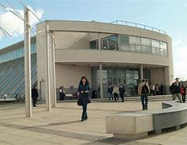
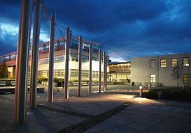

WIT Information
General WIT information
Waterford Institute of Technology (WIT) is a institute located in the South-East, Waterford, Ireland.
Over 10,000 students attend the college during an academic semester, there are also over 1,000 staff members which means the institute is very populated.
WIT provides post leaving cert individuals with a wide variety of options when it comes to courses, all kinds of technology related courses are available
among others such as healthcare, engineering, business, etc. Full time aswell as Part Time courses are also provided. Potential students are
provided with many options.


Hobbies &Activities
WIT aswell as the surrounding area of Waterford provide a vast amount of Activities/Hobbies to participate in. WIT provides facilities such as the WIT Arena, which includes kids parties, camps, team building & corporate activities. It also provides fitness facilities such as a gym, sports event etc.
Waterford provides outdoor activities such as beautiful recreational parks. This includes Waterford Nature Park, a 150 acre oasis on the edge of Waterford City and People's Park, a leafy retreat in the heart of Waterford City.
There are also a large number of sport clubs in Waterford. There are clubs which practice different sports such as Waterford FC, a soccer club, Waterford Golf Club, even Boat Clubs are available within the City.
Places to stay
Wit provides student accommodation on campus for students to stay. There are also a number of housing estates surrounding WIT where students can also rent out a small house. Waterford City Campus, Priory House Student Accommodation and Trinity Apartments are some facilities worth mentioning for students interested in living in Waterford.
Similar/Related courses
WIT provides similar courses in the healthcare field to Bachelor of Science (Honours) in Nursing Studies (International).
CAO Undergraduate, Postgraduate, Flexible, Add-on courses are provided for students to choose from.
Some similar courses:
- MSc in Nursing Level - 9 Duration - 18mths
- Certificate in Management for Healthcare Professionals Level - 9 Duration - 3mths
- BSc (Hons) in Health Sciences (Common Entry) Level - 8 Duration - 4 years
- BSc (Hons) in General Nursing Level - 8 Duration - 4 years